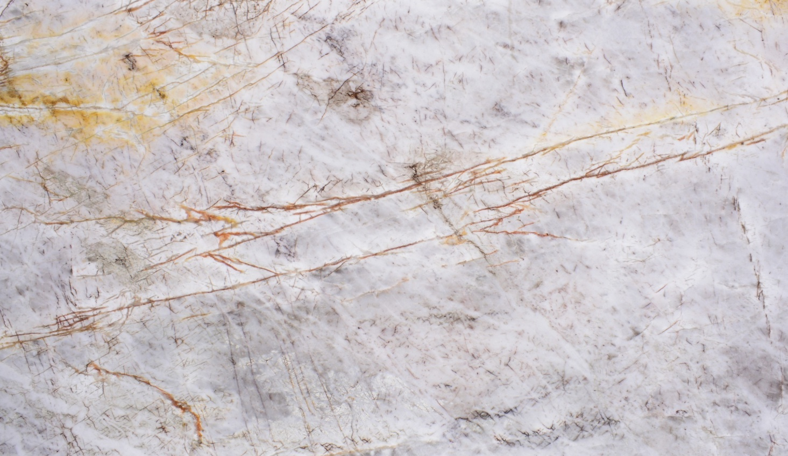
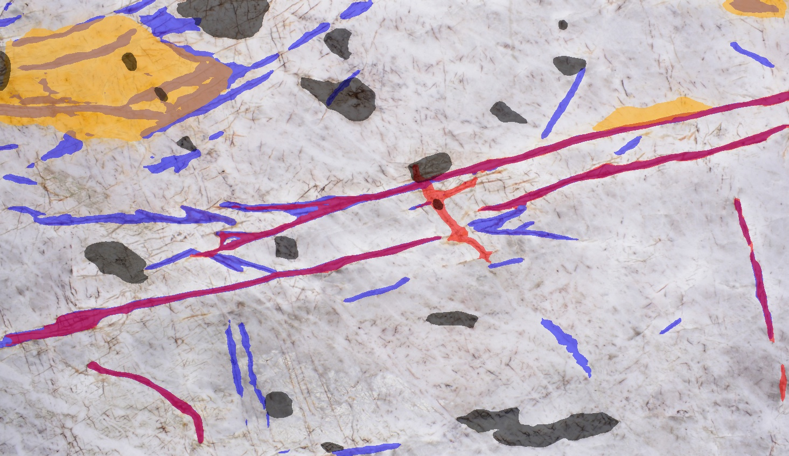
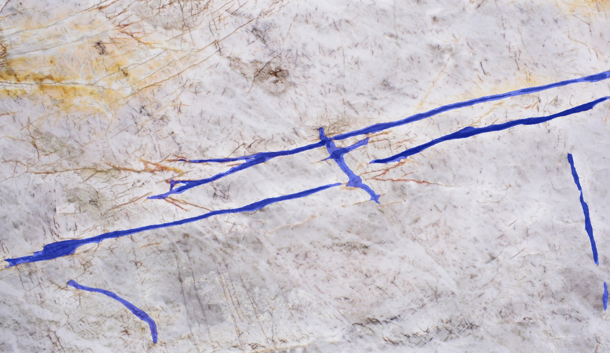
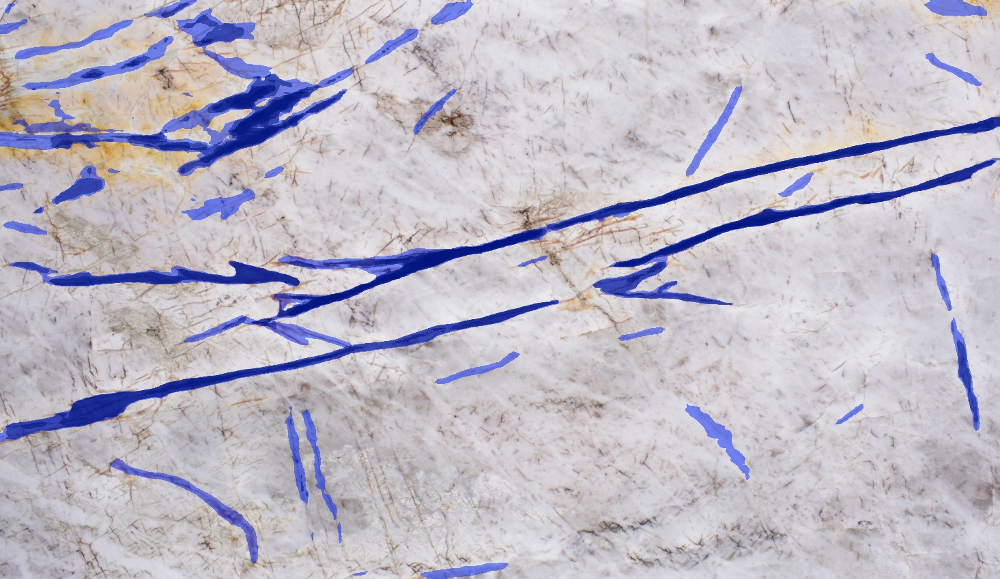
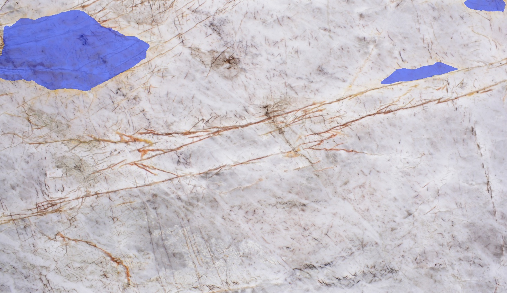
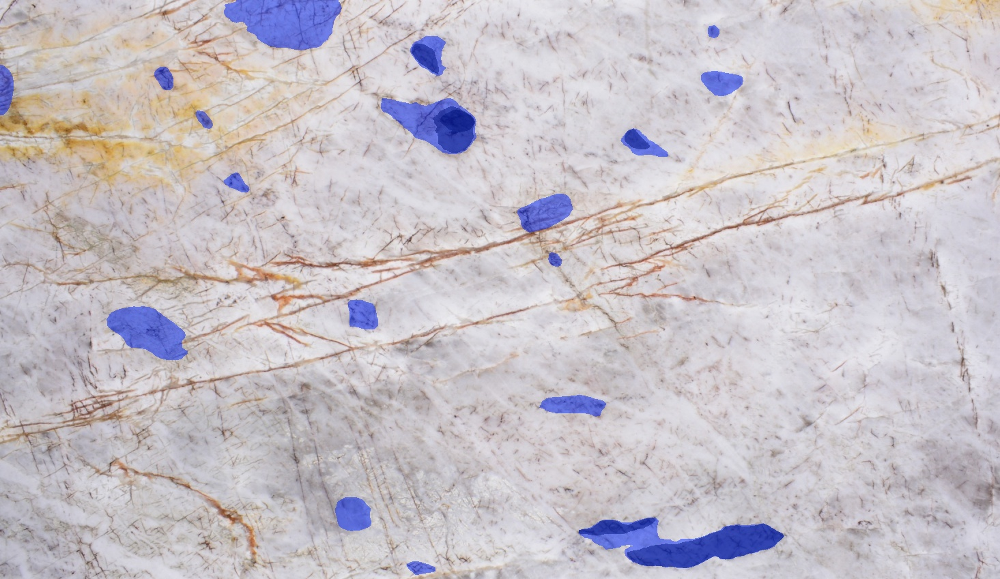

Um veio é defeito no mármore branco e padrão natural no granito. O modelo generalista monolítico confunde as feições — e gera falsos positivos.
Rotular manualmente milhares de imagens com defeitos sutis é caro e inviável em escala — limitando a adoção industrial.
Uma classificação taxonômica prévia, que restringe o domínio visual do segmentador, reduz os falsos positivos frente a um modelo generalista monolítico?
Especialistas hierárquicos têm menos falsos positivos que um generalista único — por conhecerem a aparência normal de cada litologia.
Modelo de fundação que segmenta sem treino específico, guiado por texto via CLIP (espaço texto↔imagem compartilhado).
Um modelo pesado (Professor) gera anotações automáticas que treinam um modelo leve (Aluno) — sem rótulo humano extenso.
Inferência rápida na borda, viável na linha de produção em alta taxa de quadros por segundo.
modelos YOLO11-seg, um por litologia, treinados nas anotações calibradas daquele tipo
modelo único, prompts genéricos, treinado com todas as rochas juntas
| Arquitetura | Acurácia |
|---|---|
| Xception | 99,21% |
| Inception-ResNetV2 | 97,94% |
| MobileNetV2 | 91,26% |
| EfficientNetV2-L | 54,04% |


imagem original → anotações SAM



ARIA — classificar para segmentar melhor.
A contribuição central é o segmentador especialista Teacher–Student.